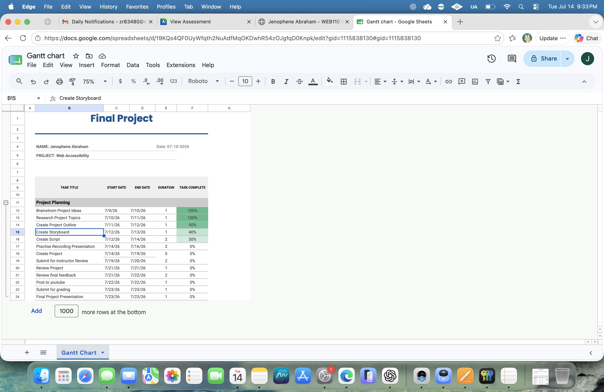

My final project is about Web Accessibility. The purpose of this project is to explain why websites should be accessible to everyone, including people with disabilities. I will describe the importance of using alternative text for images, proper heading structure, keyboard navigation, color contrast, readable fonts, and captions for videos. I will also demonstrate how accessibility evaluation tools such as the WAVE Web Accessibility Evaluation Tool and the W3C HTML Validator can help identify and fix accessibility problems. This project will include slides, screenshots, examples, and explanations to show how developers can create websites that are easy to use for all visitors. My goal is to help others understand that web accessibility improves the experience for everyone, not only people with disabilities.
While completing this assignment, I learned how to use a Gantt chart to organize a project from beginning to end. I also learned that planning each task with a start date and an end date makes it easier to manage time and finish work before the deadline. Creating a project schedule helped me understand the importance of planning, reviewing, editing, and asking for feedback before submitting a final presentation. I can use these project management skills in my future education, web development projects, and the small business that my husband and I plan to start. Careful planning will help us complete projects on time, improve the quality of our work, and communicate our progress more effectively with customers and team members.